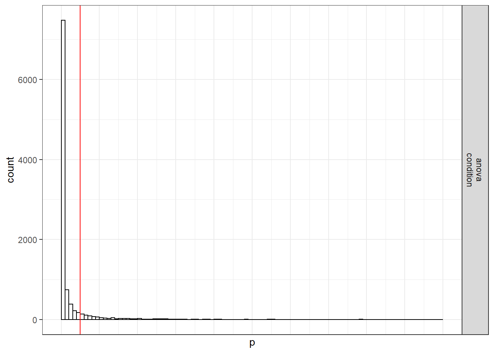
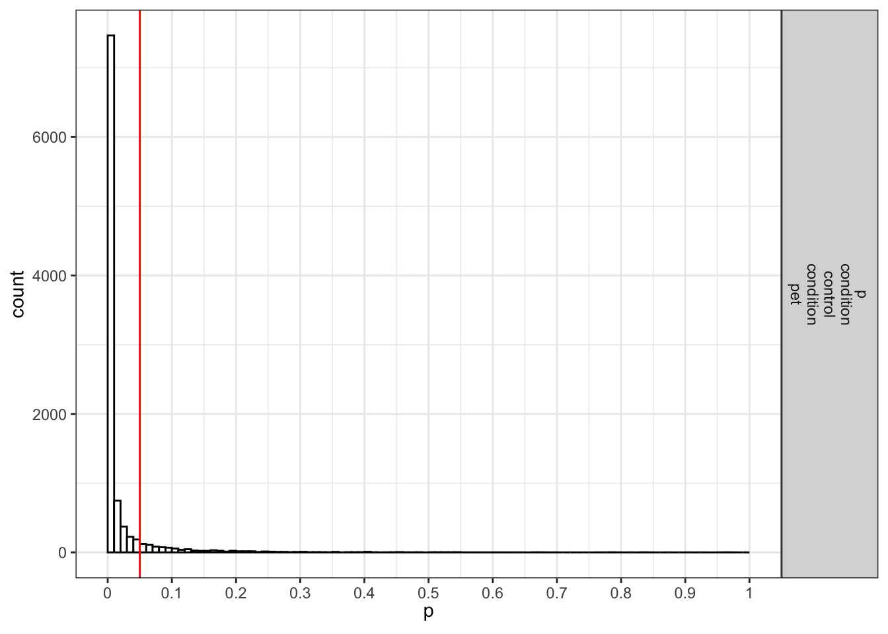

Chapter 2 One-Way ANOVA
2.1 Part 1
Using the formula also used by Albers and Lakens (2018), we can determine the means that should yield a specified effect sizes (expressed in Cohen’s f). Eta-squared (identical to partial eta-squared for one-way ANOVA’s) has benchmarks of .0099, .0588, and .1379 for small, medium, and large effect sizes (Cohen 1988). Athough these benchmarks are quite arbitrary, and researchers should only use such benchmarks for power analyses as a last resort, we will demonstrate an a priori power analysis for these values.
2.1.1 Two conditions
Imagine we aim to design a study to test the hypothesis that giving people a pet to take care of will increase their life satisfaction. We have a control condition, and a condition where people get a pet, and randomly assign participants to either condition. We can simulate a one-way ANOVA with a specified alpha, sample size, and effect size, on see the statistical power we would have for the ANOVA and the follow-up comparisons. We expect pets to increase life-satisfaction compared to the control condition. Based on work by Pavot and Diener (1993) we believe that we can expect responses on the life-satifaction scale to have a mean of approximately 24 in our population, with a standard deviation of 6.4. We expect having a pet increases life satisfaction with approximately 2.2 scale points for participants who get a pet. 200 participants in total, with 100 participants in each condition. But before we proceed with the data collection, we examine the statistical power our design would have to detect the differences we predict.
string <- "2b"
n <- 100
# We are thinking of running 50 peope in each condition
mu <- c(24, 26.2)
# Enter means in the order that matches the labels below.
# In this case, control, cat, dog.
sd <- 6.4
labelnames <- c("condition", "control", "pet") #
# the label names should be in the order of the means specified above.
design_result <- ANOVA_design(design = string,
n = n,
mu = mu,
sd = sd,
labelnames = labelnames)
alpha_level <- 0.05
# You should think carefully about how to justify your alpha level.
# We will give some examples later, but for now, use 0.05.simulation_result <- ANOVA_power(design_result,
alpha_level = alpha_level,
nsims = nsims,
verbose = FALSE)| power | effect_size | |
|---|---|---|
| anova_condition | 67.2 | 0.0331418 |
| power | partial_eta_squared | cohen_f | non_centrality | |
|---|---|---|---|---|
| condition | 67.68572 | 0.0289748 | 0.1727409 | 5.908203 |
The result shows that we have exactly the same power for the ANOVA, as we have for the t-test. When there are only two groups, these tests are mathematically identical. In a study with 100 participants, we would have quite low power (around 67.7%). An ANOVA with 2 groups is identical to a t-test. For our example, Cohen’s d (the standardized mean difference) is 2.2/6.4, or d = 0.34375 for the difference between the control condition and pets, which we can use to easily compute the expected power for these simple comparisons using the pwr (2018) package.
pwr.t.test(d = 2.2/6.4,
n = 100,
sig.level = 0.05,
type = "two.sample",
alternative = "two.sided")$power## [1] 0.6768572We can also directly compute Cohen’s f from Cohen’s d for two groups, as Cohen (1988) describes, because f = 1/2d. So f = 0.5*0.34375 = 0.171875. And indeed, power analysis using the pwr package yields the same result using the pwr.anova.test as the power.t.test.
## [1] 0.6768572This analysis tells us that running the study with 100 participants in each condition is too likely to not yield a significant test result, even if our expected pattern of differences is true. This is not optimal.
Let’s mathematically explore which pattern of means we would need to expect to habe 90% power for the ANOVA with 50 participants in each group. We can use the pwr package in R to compute a sensitivity analysis that tells us the effect size, in Cohen’s f, that we are able to detect with 3 groups and 50 partiicpants in each group, in order to achive 90% power with an alpha level of 5%.
K <- 2
n <- 100
sd <- 6.4
r <- 0
#Calculate f when running simulation
f <- pwr.anova.test(n = n,
k = K,
power = 0.9,
sig.level = alpha_level)$f
f## [1] 0.2303587This sensitivity analysis shows we have 90% power in our planned design to detect effects of Cohen’s f of 0.2303587. Benchmarks by Cohen (1988) for small, medium, and large Cohen’s f values are 0.1, 0.25, and 0.4, which correspond to eta-squared values of small (.0099), medium (.0588), and large (.1379), in line with d = .2, .5, or .8. So, at least based on these benchmarks, we have 90% power to detect effects that are slightly below a medium effect benchmark.
## [1] 0.0503911Expressed in eta-squared, we can detect values of eta-squared = 0.05 or larger.
## [1] -1.474295 1.474295We can compute a pattern of means, given a standard deviation of 6.4, that would give us an effect size of f = 0.23, or eta-squared of 0.05. We should be able to accomplish this is the means are -1.474295 and 1.474295. We can use these values to confirm the ANOVA has 90% power.
simulation_result <- ANOVA_power(design_result,
alpha_level = alpha_level,
nsims = nsims,
verbose = FALSE)| power | effect_size | |
|---|---|---|
| anova_condition | 90.15 | 0.0544974 |
| power | partial_eta_squared | cohen_f | non_centrality | |
|---|---|---|---|---|
| condition | 90.00714 | 0.0508742 | 0.2315192 | 10.61302 |
The simulation confirms that for the F-test for the ANOVA we have 90% power. This is also what Gpower tells us what would happen based on a post-hoc power analysis with an f of 0.2303587, 2 groups, 200 participants in total (100 in each between subject condition), and an alpha of 5%.

If we return to our expected means, how many participants do we need for sufficient power? Given the expected difference and standard deviation, d = 0.34375, and f = 0.171875. We can perform an a priori power analysis for this simple case, which tells us we need 179 participants in each group (we can’t split people in parts, and thus always round a power analysis upward), or 358 in total.
K <- 2
power <- 0.9
f <- 0.171875
pwr.anova.test(power = power,
k = K,
f = f,
sig.level = alpha_level)##
## Balanced one-way analysis of variance power calculation
##
## k = 2
## n = 178.8104
## f = 0.171875
## sig.level = 0.05
## power = 0.9
##
## NOTE: n is number in each groupIf we re-run the simulation with this sample size, we indeed have 90% power.
string <- "2b"
n <- 179
mu <- c(24, 26.2)
# Enter means in the order that matches the labels below.
# In this case, control, pet.
sd <- 6.4
labelnames <- c("condition", "control", "pet") #
# the label names should be in the order of the means specified above.
design_result <- ANOVA_design(
design = string,
n = n,
mu = mu,
sd = sd,
labelnames = labelnames
)
alpha_level <- 0.05simulation_result <- ANOVA_power(design_result,
alpha_level = alpha_level,
nsims = nsims,
verbose = FALSE)| power | effect_size | |
|---|---|---|
| anova_condition | 89.99 | 0.0315708 |
| power | partial_eta_squared | cohen_f | non_centrality | |
|---|---|---|---|---|
| condition | 90.03028 | 0.0288499 | 0.1723571 | 10.57568 |
We stored the result from the power analysis in an object. This allows us to request plots (which are not printed automatically) showing the p-value distribution. If we request simulation_result$plot1 we get the p-value distribution for the ANOVA:

If we request simulation_result$plot2 we get the p-value distribution for the paired comparisons (in this case only one):
 ## Part 2
2.1.2 Three conditions
Imagine we aim to design a study to test the hypothesis that giving people a pet to take care of will increase their life satisfaction. We have a control condition, a ‘cat’ pet condition, and a ‘dog’ pet condition. We can simulate a One-Way ANOVA with a specified alpha, sample size, and effect size, on see the statistical power we would have for the ANOVA and the follow-up comparisons. We expect all pets to increase life-satisfaction compared to the control condition. Obviously, we also expect the people who are in the ‘dog’ pet condition to have even greater life-satisfaction than people in the ‘cat’ pet condition. Based on work by Pavot and Diener (1993) we believe that we can expect responses on the life-satifaction scale to have a mean of approximately 24 in our population, with a standard deviation of 6.4. We expect having a pet increases life satisfaction with approximately 2.2 scale points for participants who get a cat, and 2.6 scale points for participants who get a dog. We initially consider collecting data from 150 participants in total, with 50 participants in each condition. But before we proceed with the data collection, we examine the statistical power our design would have to detect the differences we predict.
string <- "3b"
n <- 50
# We are thinking of running 50 peope in each condition
mu <- c(24, 26.2, 26.6)
# Enter means in the order that matches the labels below.
# In this case, control, cat, dog.
sd <- 6.4
labelnames <- c("condition", "control", "cat", "dog") #
# the label names should be in the order of the means specified above.
design_result <- ANOVA_design(
design = string,
n = n,
mu = mu,
sd = sd,
labelnames = labelnames
)
alpha_level <- 0.05# You should think carefully about how to justify your alpha level.
# We will give some examples later, but for now, use 0.05.
simulation_result <- ANOVA_power(design_result,
alpha_level = alpha_level,
nsims = nsims,
verbose = FALSE)| power | effect_size | |
|---|---|---|
| anova_condition | 47.26 | 0.0433997 |
| power | partial_eta_squared | cohen_f | non_centrality | |
|---|---|---|---|---|
| condition | 47.69468 | 0.0315259 | 0.180422 | 4.785156 |
The result shows that you would have quite low power with 50 participants, both for the overall ANOVA (just around 50% power), as for the follow up comparisons (approximately 40% power for the control vs cat condition, around 50% for the control vs dogs condition, and a really low power (around 6%, just above the Type 1 error rate of 5%) for the expected difference between cats and dogs.
2.1.3 Power for simple effects
We are typically not just interested in the ANOVA, but also in follow up comparisons. In this case, we would perform a t-test comparing the control condition against the cat and dog condition, and we would compare the cat and dog conditions against each other, in independent t-tests.
For our example, Cohen’s d (the standardized mean difference) is 2.2/6.4, or d = 0.34375 for the difference between the control condition and cats, 2.6/6.4 of d = 0.40625 for the difference between the control condition and dogs, and 0.4/6.4 or d = 0.0625 for the difference between cats and dogs as pets.
We can easily compute the expected power for these simple comparisons using the pwr package.
pwr.t.test(
d = 2.2 / 6.4,
n = 50,
sig.level = 0.05,
type = "two.sample",
alternative = "two.sided"
)$power## [1] 0.3983064 pwr.t.test(
d = 2.6 / 6.4,
n = 50,
sig.level = 0.05,
type = "two.sample",
alternative = "two.sided"
)$power## [1] 0.5205162 pwr.t.test(
d = 0.4 / 6.4,
n = 50,
sig.level = 0.05,
type = "two.sample",
alternative = "two.sided"
)$power## [1] 0.06104044This analysis tells us that running the study with 50 participants in each condition is more likely to not yield a significant test result, even if our expected pattern of differences is true, than that we will observe a p-value smaller than our alpha level. This is not optimal.
Let’s mathematically explore which pattern of means we would need to expect to habe 90% power for the ANOVA with 50 participants in each group. We can use the pwr package in R to compute a sensitivity analysis that tells us the effect size, in Cohen’s f, that we are able to detect with 3 groups and 50 partiicpants in each group, in order to achive 90% power with an alpha level of 5%.
K <- 3
n <- 50
sd <- 6.4
r <- 0
#Calculate f when running simulation
f <- pwr.anova.test(n = n,
k = K,
power = 0.9,
sig.level = alpha_level)$f
f## [1] 0.2934417This sensitivity analysis shows we have 90% power in our planned design to detect effects of Cohen’s f of 0.2934417. Benchmarks by Cohen (1988) for small, medium, and large Cohen’s f values are 0.1, 0.25, and 0.4, which correspond to eta-squared values of small (.0099), medium (.0588), and large (.1379), in line with d = .2, .5, or .8. So, at least based on these benchmarks, we have 90% power to detect effects that are somewhat sizeable.
## [1] 0.07928127Expressed in eta-squared, we can detect values of eta-squared = 0.0793 or larger.
## [1] -2.300104 0.000000 2.300104We can compute a pattern of means, given a standard deviation of 6.4, that would give us an effect size of f = 0.2934, or eta-squared of 0.0793. We should be able to accomplish this is the means are -2.300104, 0.000000, and 2.300104. We can use these values to confirm the ANOVA has 90% power.
simulation_result <- ANOVA_power(design_result,
alpha_level = alpha_level,
nsims = nsims,
verbose = FALSE)| power | effect_size | |
|---|---|---|
| anova_condition | 90.3 | 0.090741 |
| power | partial_eta_squared | cohen_f | non_centrality | |
|---|---|---|---|---|
| condition | 90.00112 | 0.0807686 | 0.2964209 | 12.9162 |
The simulation confirms that for the F-test for the ANOVA we have 90% power. This is also what g*power tells us what would happen based on a post-hoc power analysis with an f of 0.2934417, 3 groups, 150 participants in total (50 in each between subject condition), and an alpha of 5%.

We can also compute the power for the ANOVA and simple effects in R with the pwr package. The calculated effect sizes and power match those from the simulation.
K <- 3
n <- 50
sd <- 6.4
f <- 0.2934417
pwr.anova.test(
n = n,
k = K,
f = f,
sig.level = alpha_level
)$power## [1] 0.9000112## [1] 0.3593912pwr.t.test(
d = 2.300104 / 6.4,
n = 50,
sig.level = 0.05,
type = "two.sample",
alternative = "two.sided"
)$power## [1] 0.4284243## [1] 0.7187825## [1] 0.9450353We can also compare the results against the analytic solution by Aberson (2019).
First, load the function for a 3-way ANOVA from the pwr2ppl package.
Then we use the function to calculate power.
#Initial example, low power
anova1f_3(
m1 = 24,
m2 = 26.2,
m3 = 26.6,
s1 = 6.4,
s2 = 6.4,
s3 = 6.4,
n1 = 50,
n2 = 50,
n3 = 50,
alpha = .05
)## Sample size overall = 150## Power = 0.4769 for eta-squared = 0.0315#From: Aberson, Christopher L.
# Applied Power Analysis for the Behavioral Sciences, 2nd Edition.
# $Power [1] 0.4769468
#Later example, based on larger mean difference
anova1f_3(
m1 = -2.300104,
m2 = 0,
m3 = 2.300104,
s1 = 6.4,
s2 = 6.4,
s3 = 6.4,
n1 = 50,
n2 = 50,
n3 = 50,
alpha = .05
)## Sample size overall = 150## Power = 0.9 for eta-squared = 0.08082.2 Effect Size Estimates for One-Way ANOVA
Using the formulas below, we can calculate the means for a one-way ANOVA. Using the formula from Albers and Lakens (2018), we can determine the means that should yield a specified effect sizes (expressed in Cohen’s f).
Eta-squared (idential to partial eta-squared for one-way ANOVA’s) has benchmarks of .0099, .0588, and .1379 for small, medium, and large effect sizes (Cohen 1988).
2.2.1 Three conditions, small effect size
We can simulate a one-factor anova setting means to achieve a certain effect size. Eta-squared is biased. Thus, the eta-squared we calculate based on the observed data overestimates the population effect size. This bias is largest for smaller sample sizes. Thus, to test whether the simulation yields the expected effect size, we use extremele large sample sizes in each between subject condition (n = 5000). This simulation should yield a small effect size (0.099)
K <- 3
ES <- .0099
mu <- mu_from_ES(K = K, ES = ES)
n <- 5000
sd <- 1
r <- 0
string = paste(K,"b",sep = "")design_result <- ANOVA_design(
design = string,
n = n,
mu = mu,
sd = sd,
r = r,
labelnames = c("factor1", "level1", "level2", "level3")
)simulation_result <- ANOVA_power(design_result,
alpha_level = alpha_level,
nsims = nsims,
verbose = FALSE)| power | effect_size | |
|---|---|---|
| anova_factor1 | 100 | 0.0100165 |
| power | partial_eta_squared | cohen_f | non_centrality | |
|---|---|---|---|---|
| factor1 | 100 | 0.009902 | 0.100005 | 149.9848 |
The resulting effect size estimate from the simulation is very close to 0.0099
2.2.2 Four conditions, medium effect size
This simulation should yield a medium effect size (0.588) across four independent conditions.
K <- 4
ES <- .0588
mu <- mu_from_ES(K = K, ES = ES)
n <- 5000
sd <- 1
r <- 0
string = paste(K,"b",sep = "")design_result <- ANOVA_design(
design = string,
n = n,
mu = mu,
sd = sd,
r = r,
labelnames = c("factor1", "level1", "level2", "level3", "level4")
)simulation_result <- ANOVA_power(design_result,
alpha_level = alpha_level,
nsims = nsims,
verbose = FALSE)| power | effect_size | |
|---|---|---|
| anova_factor1 | 100 | 0.058913 |
| power | partial_eta_squared | cohen_f | non_centrality | |
|---|---|---|---|---|
| factor1 | 100 | 0.0588111 | 0.2499719 | 1249.469 |
Results are very close to 0.588.
2.2.3 Two conditions, large effect size
We can simulate a one-way ANOVA that should yield a large effect size (0.1379) across two conditions.
K <- 2
ES <- .1379
mu <- mu_from_ES(K = K, ES = ES)
n <- 5000
sd <- 1
r <- 0
string = paste(K,"b",sep = "")design_result <- ANOVA_design(design = string,
n = n,
mu = mu,
sd = sd,
r = r,
labelnames = c("factor1", "level1", "level2"))simulation_result <- ANOVA_power(design_result,
alpha_level = alpha_level,
nsims = nsims,
verbose = FALSE)| power | effect_size | |
|---|---|---|
| anova_factor1 | 100 | 0.1380489 |
| power | partial_eta_squared | cohen_f | non_centrality | |
|---|---|---|---|---|
| factor1 | 100 | 0.1379238 | 0.3999878 | 1599.582 |
The results are very close to is simulation should yield a small effect size (0.1379).
References
Albers, Casper, and Daniël Lakens. 2018. “When Power Analyses Based on Pilot Data Are Biased: Inaccurate Effect Size Estimators and Follow-up Bias.” Journal of Experimental Social Psychology 74: 187–95. https://doi.org/10.1016/j.jesp.2017.09.004.
Champely, Stephane. 2018. Pwr: Basic Functions for Power Analysis. https://CRAN.R-project.org/package=pwr.
Cohen, J. 1988. Statistical Power Analysis for the Behavioral Sciences. Lawrence Erlbaum Associates.
Pavot, William, and Ed Diener. 1993. “The Affective and Cognitive Context of Self-Reported Measures of Subjective Well-Being.” Social Indicators Research 28 (1): 1–20.